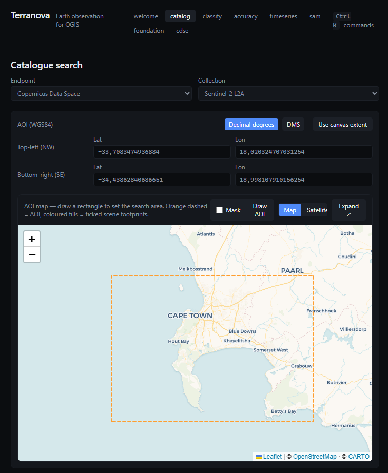
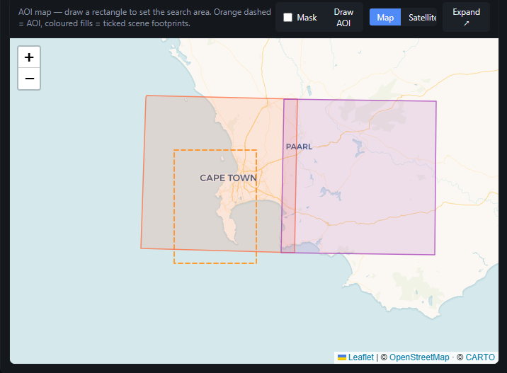
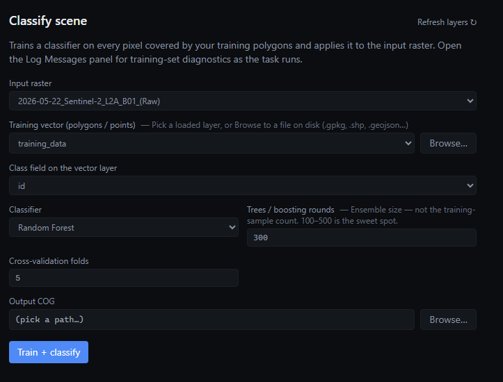
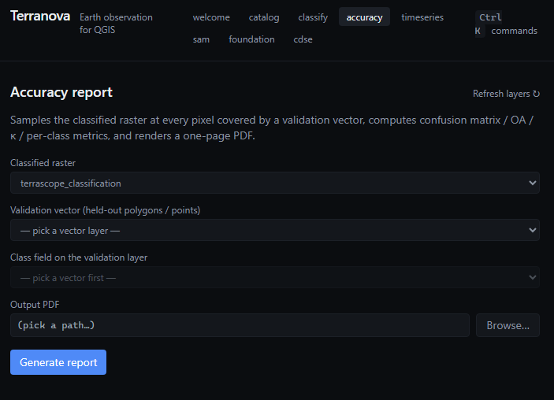
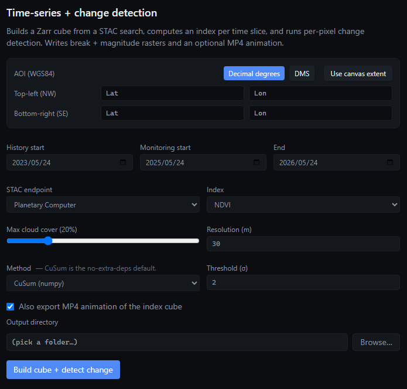

STAC catalogue search
Planetary Computer, Earth Search, CDSE. Draw or type an AOI, filter by date and cloud cover, preview footprints on an embedded OpenStreetMap (or satellite) basemap.
Open-source · GPL-3.0 · QGIS 3.40+ / 4.x
Terranova is a modern QGIS plugin for STAC catalogue search, supervised classification, and per-pixel time-series change detection. Built to replace the Semi-Automatic Classification Plugin with a snappier UI and a STAC-first data pipeline.

Search Planetary Computer, Earth Search, and Copernicus Data Space directly from QGIS. Draw an AOI on an interactive map, preview scene coverage with colour-coded footprints, and pick the imagery that actually overlaps where you care about. Download as Cloud-Optimised GeoTIFF — optionally clipped to your AOI.
Train a classifier (Random Forest, LightGBM, XGBoost) on training polygons, predict to a labelled raster, get a one-click accuracy report PDF. Run BFAST / LandTrendr / CuSum change detection on a Sentinel-2 time-series cube without writing a line of code. SAM prompts and Prithvi/Clay foundation-model fine-tunes are wired in for when you outgrow the classical stack.
Planetary Computer, Earth Search, CDSE. Draw or type an AOI, filter by date and cloud cover, preview footprints on an embedded OpenStreetMap (or satellite) basemap.
Multi-select scenes; download as Cloud-Optimised GeoTIFFs to a folder of your choice. Optional AOI-mask clip. Live progress bar + log tail for every job.
Random Forest, LightGBM, XGBoost — train on training polygons, predict to a COG, get cross-validated accuracy out of the box. Reasonable defaults; minimal knobs.
Confusion matrix, per-class precision/recall/F1, overall accuracy and Cohen's kappa, exported as a PDF report you can hand to a client.
Per-pixel CuSum, BFAST, and LandTrendr on Sentinel-2 cubes. Break-index and magnitude rasters drop straight into the layer panel; optional MP4 of the index time-series.
Prithvi-EO-2.0 and Clay fine-tunes via TerraTorch, with ONNX export for inference. SAM-prompted segmentation via segment-geospatial. GPU-aware; falls back to CPU sensibly.
Drop PNGs into web/screenshots/ matching the filenames
below — the placeholders disappear automatically.




The Semi-Automatic Classification Plugin is the de-facto QGIS plugin for supervised classification — a million-plus downloads and a decade of feature accretion. But its UX hasn't been redesigned since 2016, the install path is fragile, and the classifier stack is sklearn-era. Terranova picks up the same problem with a different starting point:
Terranova isn't published to plugins.qgis.org yet.
Until then, install from source:
git clone https://github.com/TerranovaEO/terranova
cd terranova
# Build the embedded web panel (one-time)
cd src/terranova/ui_web
npm install
npm run build
cd ../../..
# Junction the source into your QGIS plugins folder
.\scripts\link_plugin.ps1 # Windows PowerShell
# or: make deploy # macOS / Linux
# Launch QGIS — Terranova appears under Plugins → Installed.Full install + first-run guide: docs/installation.md.